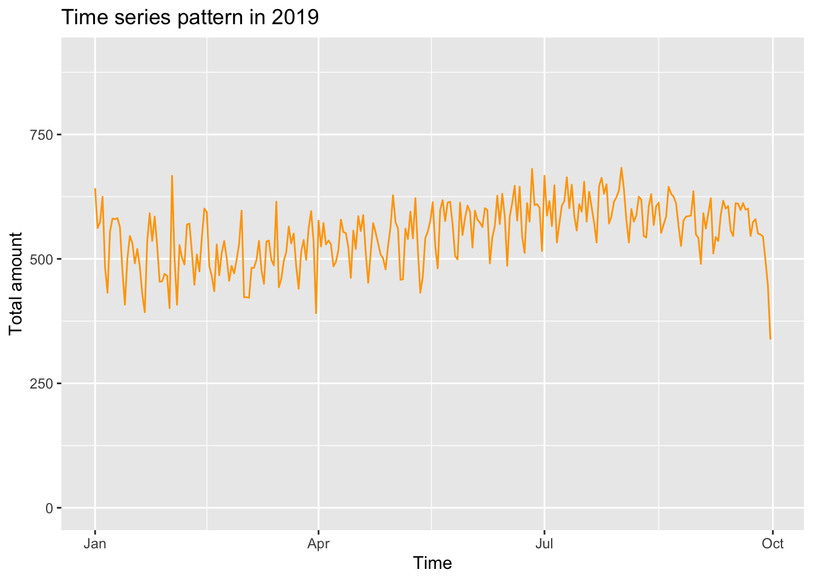
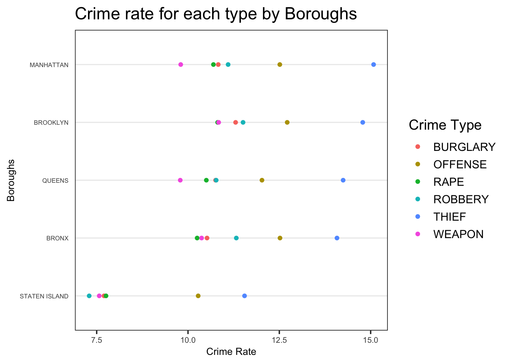
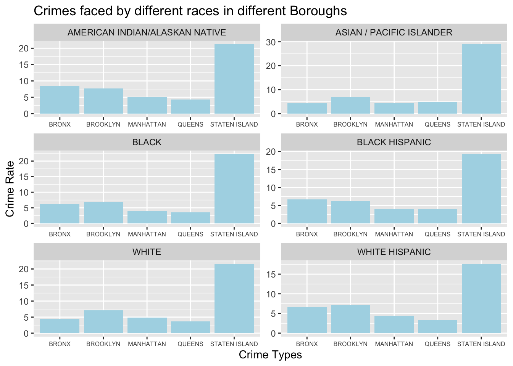

Chapter 5 Results
library(dplyr)
library(choroplethrMaps)
library(choroplethr)
library(ggplot2)
library(viridis)
library(chron)
library(tidyverse)In chapter 3, we have dropped some trivial crime types like “CRIMINAL MISCHIEF” and now we only pay attention to the common crime types of events happened in NYC. There are 11 crime types in total and we can see the frequency rank of them in the following graph.
df1 <- data.frame(df_select[,4])
df1['count'] <- 1
df1<- df1 %>%
group_by(df_select...4.) %>%
summarize(Freq = sum(count))
ggplot(df1, aes(reorder(df_select...4.,df1$Freq), y = df1$Freq)) +
geom_bar(position = "dodge",stat = "identity",fill="lightblue") +
coord_flip() +
labs(x = "Crime Types", y = "Total amount", title = "Major Crimes in NYC")As we can see, THIEF is the most common crime in NYC and we deduce that this phenomenon may result from the low cost of theft. Offence also appears very common, because there are many different types of crime could be classified as OFFENCE. ARSON, MURDER and KIDNAPPING are the least common crime types in the dataset.
For the convenience of the later researches, we drop 5 types of crime from our dataset: ARSON, MURDER, KIDNAPPING, DRUG and FRAUD.
MURDER related data has great amount of missing data for latitude and longitude, also ARSON, MURDER and KIDNAPPING contain very few useful pieces of data, which is difficult to conduct instructive analysis. We drop FRAUD because this could be avoided effectively. For DRUG, although it is very common, usually it is the indirect reason for other crimes like offence or murder, the crime DRUG itself usually doesn’t cause great harm to the society.
dangerous <-c('BURGLARY','OFFENSE','RAPE','ROBBERY','THIEF','WEAPON')
df_select <- df_select %>% mutate(OFNS_DESC = ifelse(OFNS_DESC %in% dangerous, OFNS_DESC, NA)) %>% drop_na(OFNS_DESC)
df_select <- drop_na(df_select, BORO_NM)DATA2 <- read.csv("QuickFacts.csv")
DATA2 <-DATA2[, colSums(is.na(DATA2)) != nrow(DATA2)]
DATA2 <-DATA2[,-c(2,8)]
DATA2 <-as.data.frame(t(DATA2))
names(DATA2) <- as.character(unlist(DATA2[1,]))
DATA2 <- DATA2[-1,]
DATA2 <-as.data.frame(DATA2[,1])
names(DATA2)<-'Population'
row.names(DATA2) <-c('MANHATTAN','BRONX','QUEENS','BROOKLYN','STATEN ISLAND')
ChorDF <-df_select%>%
group_by(df_select$BORO_NM) %>%
summarise(count=n())%>%
ungroup()
ChorDF <- data.frame(ChorDF[,-1], row.names = unlist(ChorDF[,1]))
ChorDF <- merge(ChorDF,DATA2,by = 0)
ChorDF$count <-as.numeric(ChorDF$count)
ChorDF$Population <-as.numeric((gsub("\\,", "", ChorDF$Population)))
ChorDF <-ChorDF %>%
mutate(rate = as.double(count/Population)*100000)
ChorDF[,'region'] <- NA
for(i in 1:nrow(ChorDF)){
if(ChorDF[i,1] == 'BRONX'){ChorDF[i,'region'] <-36005}
if(ChorDF[i,1] == 'BROOKLYN'){ChorDF[i,'region'] <-36047}
if(ChorDF[i,1] == 'MANHATTAN'){ChorDF[i,'region'] <-36061}
if(ChorDF[i,1] == 'QUEENS'){ChorDF[i,'region'] <- 36081}
if(ChorDF[i,1] == 'STATEN ISLAND'){ChorDF[i,'region'] <-36085}
}
colnames(ChorDF)[4] <-'value'
data(county.regions)
nyc_county_names = c("kings", "bronx", "new york", "queens", "richmond")
nyc_county_fips = county.regions %>%
filter(state.name == "new york" & county.name %in% nyc_county_names) %>%
select(region)
county_choropleth(ChorDF,
title = "Number of Selected Crime per 100000 Population for Five Borough",
legend = "Crime Rate",
county_zoom = nyc_county_fips$region)## Warning in min(xx[xx > upper]): no non-missing arguments to min; returning
## InfAfter we selected the six most related crime to us, we take the population of each county into account and calculate the the crime rate of selected crime in five counties. The higher crime rate start from brooklyn along mahanttan to bronx whereas queens and staten island have lower crime rate. The suprsing thing is that, in our mind, brooklyn is always considered as a more dangerous county than mahanttan.
However,we cannot judge which county is more dangerous for us and which county is more safe from this graph. Since different person may have different rank for the dangerousness of the crime types.
As full-time students, we go out more frequently from Monday to Friday rather than weekends. Therefore we want to know the days with the most and least frequent number of crime events for each borough, and the plot is as following:
library(chron)
library(ggplot2)
ggplot(df_select, aes(factor(weekdays(CMPLNT_FR_DT,abbreviate =TRUE), levels=c("Mon", "Tue", "Wed", "Thu", "Fri", "Sat", "Sun"))))+
geom_bar(fill="lightblue")+
xlab("Weekdays")+
ggtitle("The Number of Crime Events in Weekdays by Borough in New York City")+
facet_wrap("BORO_NM", scale="free")Based on the above plot, the weekdays pattern is similar for each borough, where in the weekends the occurance of crime events is relatively infrequently compare to weekdays. Moreover, it seems that Staten Island is the best place to live if only safety is considered.
We want to figure out if there are special time of the year where more crimes happen. So we build the following graph for recognizing time series patterns.
df2 <- data.frame(df_select[,1:2])
df2['count'] <- 1
df2<- df2 %>%
group_by(CMPLNT_FR_DT) %>%
summarize(Freq = sum(count))
df2 <- df2 %>%
filter(CMPLNT_FR_DT >=as.Date('2019-01-01'))
ggplot(df2, aes(as.Date(CMPLNT_FR_DT), y = Freq)) +
geom_line(color="orange")+
ylim(0, 900) +
labs(x = "Time", y = "Total amount", title = "Time series pattern in 2019") As shown in the graph, more crimes happened in the early Janaury and summer. Early Jauaury, especially during the new year celebration time, since more people went out for celebration, the raise of crime amount is reasonable. Besides, summer time is another period for more crimes. It may due to the relation between temperature and people’s moods.
Since this research is aimed to find the suitable and safe region for university students to live, we want to see the time series pattern in each borough.
df2 <- data.frame(df_select[,1:2])
df2['count'] <- 1
df2 <-df2[!is.na(df2$BORO_NM), ]
df2<- df2 %>%
group_by(BORO_NM,CMPLNT_FR_DT) %>%
summarize(Freq = sum(count))
df2 <- df2 %>%
filter(CMPLNT_FR_DT >=as.Date('2019-01-01'))
df2["adjusted"] <- 0
df3 <- data.frame(df2)
DA <- data.frame(DATA2)
DA$Population <-as.numeric((gsub("\\,", "", DA$Population)))
for(i in 1:1365){
states <- df3[i,1]
df3[i,'adjusted']<-100000*df3[i,3]/DA[states,"Population"]
}
ggplot(df3, aes(as.Date(CMPLNT_FR_DT), y = Freq)) +
geom_line(color="orange") +
facet_wrap(~BORO_NM, scales="free_y",ncol = 2)+
labs(x = "Time", y = "Crime Rate", title = "Time series pattern in 2019 in different boroughs")Among 5 boroughs, only MANHATTAN doesn’t show a decline trend. For MANHATTAN, Other boroughs all show the decline trend after September.
#Cleveland dot plot
library(tidyverse)
cleveland <-df_select[,c('BORO_NM','OFNS_DESC')]
cleveland['Freq'] = 1
cleveland <- cleveland %>%
group_by(BORO_NM,OFNS_DESC) %>%
summarize(Freq = log(sum(Freq),2)) %>%
ungroup()
theme_dotplot <- theme_bw(14) +
theme(axis.text.y = element_text(size = rel(.55)),
axis.text.x = element_text(size = rel(.70)),
axis.ticks.y = element_blank(),
axis.title.x = element_text(size = rel(.70)),
axis.title.y = element_text(size = rel(.70)),
panel.grid.major.x = element_blank(),
panel.grid.major.y = element_line(size = 0.5),
panel.grid.minor.x = element_blank())
ggplot(cleveland,aes(Freq,fct_reorder2(BORO_NM,
OFNS_DESC == 'THIEF',Freq, .desc = FALSE),color = OFNS_DESC))+
geom_point()+
ylab('Boroughs')+
xlab('Crime Rate')+
labs(title = 'Crime rate for each type by Boroughs ',color = "Crime Type")+
theme_dotplot The above graph showing the exactly crime rate for each type in five counties. The most frequent crime are Offense and thief for all counties. As we discuss above, the cost of theft is the lowest and definiton of offense is broadly defined which shoube be the reason for high frequency of this two crime type.
Therefore, we focus on other four types. It is interesting that Brooklyn have highest crime rate for all four serious cirme types(Rape,Robbery,weapon,burglary) but the total crime rate for brooklyn actually lower than manhattan. It seem like that the crimes happened in brookyln are more likely to be some serious crimes.
The bronx have second highest total crime rate and also second highest rate for all serious crime types. Therefroe both bronx and brooklyn are not good choice for student like us to choose from the safty concern.
For the staten island, the frepuency of all crime types are signifnatly lower then thoes of other four counties. From the safety concern, staten island maybe a good choice for moving to. However, the final deicison should take the commute time into account.
picked_time <- c("07am - 11am", "15pm - 19pm", "19pm - 23pm")
crime_color <- c("#7851a9", "#800020", "#ef5927", "#0079c1", "#dac751", "#133a30")
df_select <- df_select %>% drop_na(BORO_NM)
df_select <- df_select %>% mutate(timerange = CMPLNT_FR_TM)
df_select <- df_select %>% mutate(timerange = ifelse(CMPLNT_FR_TM >= chron(times="07:00:00")
& CMPLNT_FR_TM <= chron(times="11:00:00"),
"07am - 11am", timerange) )
df_select <- df_select %>% mutate(timerange = ifelse(CMPLNT_FR_TM >= chron(times="15:00:00")
& CMPLNT_FR_TM <= chron(times="19:00:00"),
"15pm - 19pm", timerange) )
df_select <- df_select %>% mutate(timerange = ifelse(CMPLNT_FR_TM >= chron(times="19:00:00")
& CMPLNT_FR_TM <= chron(times="23:00:00"),
"19pm - 23pm", timerange) )
df_select <- df_select %>% mutate(color = timerange)
df_select <- df_select %>% mutate( color = ifelse(timerange == picked_time[1], "red", color) )
df_select <- df_select %>% mutate( color = ifelse(timerange == picked_time[2], "green", color) )
df_select <- df_select %>% mutate( color = ifelse(timerange == picked_time[3], "blue", color) )
df_select <- df_select %>% mutate(crimecolor = OFNS_DESC)
for(i in 1:length(dangerous)){
df_select <- df_select %>% mutate( crimecolor = ifelse(OFNS_DESC == dangerous[i], crime_color[i], crimecolor) )
}
df_select <- df_select %>% mutate(timerange = ifelse(timerange %in% picked_time, timerange, NA)) %>% drop_na(timerange)As a student, we rent a place because we need to go to school or job. So it is very important to avoid the places that have a higher chance of crime when we are walking to school, or coming back to home. Therefore, we have broken down the the time that the crime happened into the ranges that we cared about the most. Which are the following:
- 7am - 11am (the time when we go to school or work)
- 15pm - 19pm (the time we go back to home )
- 19pm - 23pm (the time we go back to home when we have night class)
So we have created an interactive spatial map so that the user could explore the area and avoid the location that are dangerous at those time period.
ggplot(df_select, aes(x=OFNS_DESC, ..count.., fill=timerange)) +
geom_bar(position="dodge") +
facet_wrap(~BORO_NM, ncol=2,scales="free_x") +
scale_y_continuous(trans='log2') Because we are all in the age group 18-24, and we want to find how we are related to the victims of crime events, first we plot the distribution of 5 age groups from <18 to 65+ in each borough, and the result is as following:
df_age <- subset(df_select, as.character(VIC_AGE_GROUP) %in% c("<18", "18-24", "25-44", "45-64","65+") )
ggplot(df_age, aes(VIC_AGE_GROUP))+
geom_bar(fill="lightblue")+
xlab("Age Groups")+
ggtitle("The Distribution of Age Groups of Victims by Borough in New York City")+
facet_wrap("BORO_NM", scale="free")According to the graphs, we found that for each borough, the pattern of victims age group is similar, where the 25-44 age group has the largest number of victims, and the 45-64 age group has the second largest number of victims. For this plot it seems that the 18-24 age group among different boroughs is not apparent, so we extract the 18-24 group of each borough and draw the following barplot:
df_age2<-subset(df_age, as.character(VIC_AGE_GROUP)=="18-24")
#df_age2 <- df_age2$VIC_AGE_GROUP
df_age2 <-df_age2%>%
group_by(df_age2$BORO_NM) %>%
summarise(count=n())%>%
ungroup()
names(df_age2)[1] <- "Borough"
df_age2$count <- df_age2$count/ChorDF$Population*100000
names(df_age2)[2] <- "Rate"
ggplot(df_age2, aes(x=reorder(Borough, -Rate), y=Rate))+
geom_bar(stat = "identity",fill="lightblue")+
xlab("Boroughs")+
ggtitle("The Number of Victims per 100000 People in 18-24 Age Group by Borough in New York City")For this plot, we convert the count of crime events to crime rate per 100000 people, and we can see clearly that Manhattan has the largest crime rate, while staten island has the smallest crime rate.
df_race <-df_select[,c('OFNS_DESC','VIC_RACE')]
df_race <- df_race %>%
filter(VIC_RACE != 'UNKNOWN')
df_race['count'] <- 1
df_race<- df_race %>%
group_by(VIC_RACE,OFNS_DESC) %>%
summarize(Freq = log(sum(count)))
ggplot(df_race, aes(x = OFNS_DESC, y = Freq))+
geom_bar(position = "dodge",stat = "identity",fill="lightblue") +
facet_wrap(~VIC_RACE, scales="free", nrow = 3)+
theme(axis.text.x=element_text(size=6))+
labs(x = "Crime Types", y = "log(Total amount)", title = "Major Crimes faced by different races in NYC")Also for different races, people may face different crime rate among different borough. In order to help students with different origins to make the proper choices, we make the following graph.
df_race <-df_select[,c('BORO_NM','VIC_RACE')]
df_race <- df_race %>%
filter(VIC_RACE != 'UNKNOWN')
df_race['count'] <- 1
df_race<- df_race %>%
group_by(VIC_RACE,BORO_NM) %>%
summarize(Freq = sum(count))
df_race['adjusted'] <- 1
df_race <- data.frame(df_race)
for(i in 1:30){
state <- df_race[i,2]
df_race[i,'adjusted']<-100000*df3[i,3]/DA[state,"Population"]
}
ggplot(df_race, aes(x = BORO_NM, y = adjusted))+
geom_bar(position = "dodge",stat = "identity",fill="lightblue") +
facet_wrap(~VIC_RACE, scales="free", nrow = 3)+
theme(axis.text.x=element_text(size=6)) +
labs(x = "Crime Types", y = "Crime Rate", title = "Crimes faced by different races in different Boroughs") According to the graph, we don’t recommend students to live in STATEN ISLAND, because its crime rate is much greater than the other boroughs. And for students with different races, they can choose the region with low crime rate according to their own condition. For example, BRONX and MANHATTAN are more suitable for Asian students rather than BROOKLYN.